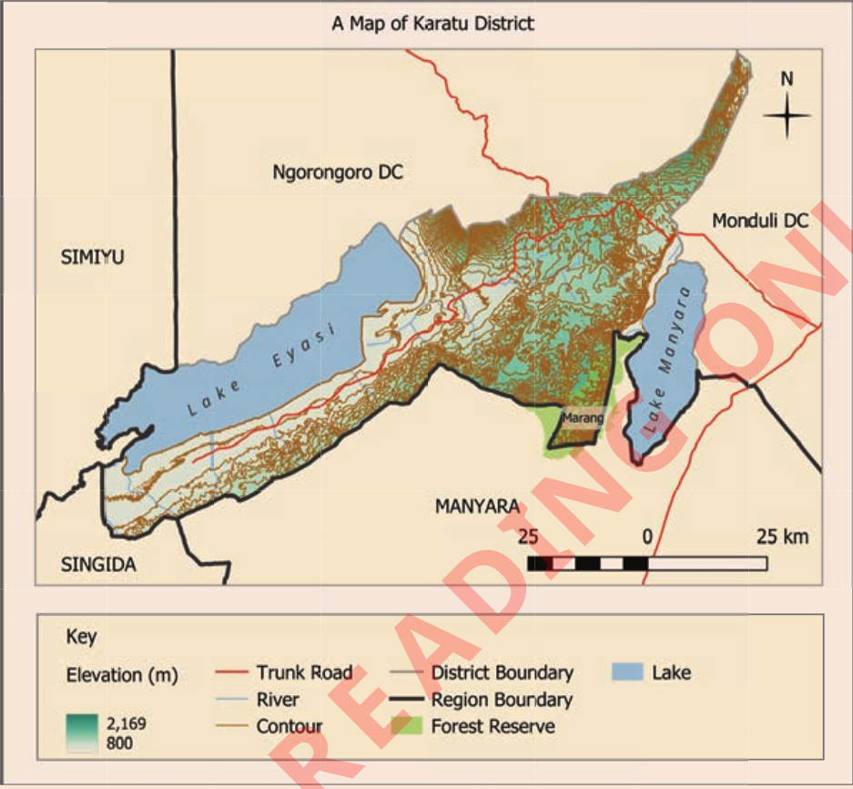

Activity 10
Study Figure 28, then answer the following questions:

Figure 28:
Relief of Karatu district
Questions
1.
Identify the relief features represented on the map.
2.
What economic activities can take place in the relief features you identified?
3.
Identify the symbols used on the map to represent the relief features.